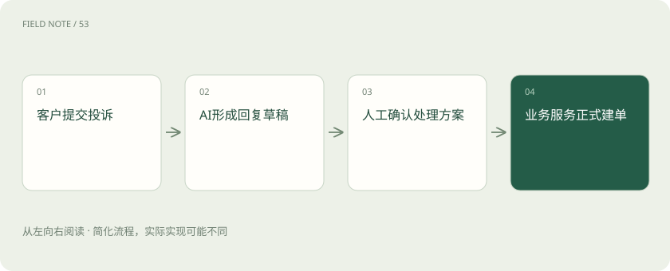
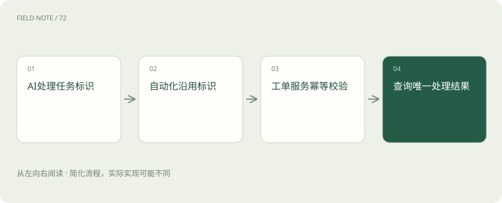

先读哪些知识
先用一个类比理解
类比只帮助建立直觉，不等同于技术的完整机制。
一图看懂
从投诉进入系统说起
客户提交一段投诉，系统需要识别产品、检索售后政策、生成回复草稿，必要时建工单并通知负责人。看起来是一张流程图，实际上含有交互式 AI 应用、跨系统自动化和有权限的业务写入三个问题。
Dify、n8n 和 Flowise 都能参与其中，但不能只比较谁的节点更多。应先判断主要交付物是客户可用的问答应用、后台触发的自动化任务，还是团队可快速调整的模型与工具链，再选择对应的主平台。
Dify 以 AI 应用为中心
Dify 提供可视化 AI 应用编排、知识相关能力及应用发布等功能。在投诉案例里，它适合组织会话输入、知识检索、模型生成和条件分支，让业务人员能围绕回答体验迭代应用。
平台提供一个应用入口，不意味着它可以直接复用公司门户的全部权限。谁能访问应用、检索资料时用谁的身份、后端调用携带什么租户信息，都需要在集成时落实，不能只靠给模型一句“注意保密”。
n8n 以事件和业务连接为中心
n8n 重点是工作流自动化和系统集成，同时具有 AI 能力。它可在表单提交、定时任务或外部事件到来后，调用多个服务，整理数据并发送到后续节点。这里的重点常是任务何时触发、数据如何流转以及失败如何处理。
投诉场景中，可以由它把已审核草稿写入工单、同步状态并触发通知。若某一步失败，需要明确是否继续其他分支、是否重试，以及相同事件再次到来时是否重复建单。模型节点不会替整个业务流程处理这些语义。
图解：投诉从草稿到工单

Flowise 以可视化 AI 编排为入口
Flowise 让开发者和实施团队通过可视化方式组织 AI Agent、模型、检索与工具等能力。它适合快速搭建和观察 AI 处理链，但“画布上连通”仅证明组件可以连接，并不证明输出适合对外发布。
可以用它验证投诉分类、资料检索和工具使用方案，再测试结构化输出是否稳定。若复杂逻辑已经需要大量自定义节点，应评估继续留在画布的可维护性，还是把该部分移到有清晰接口和测试的代码服务。
组合时先指定责任人
一种合理分工是：Dify 或 Flowise 承担 AI 处理应用，n8n 处理外部事件与系统同步，工单服务负责真实建单和权限校验。但这只是架构选择，不是固定组合公式；一套平台能满足需求时，无需同时安装三套。
跨平台要指定唯一任务标识，并把草稿、审批与正式发送区分开。否则 AI 平台重试一次、自动化平台也重试一次，可能产生多张工单。每个平台都“执行成功”并不等于端到端流程正确。
低代码仍有发布治理
画布、提示词、知识库和工具配置都可能改变生产行为，应有版本、审阅及回退办法。把一个模型节点的输出字段改名，下游建单节点可能读取不到数据；只在画布中看到绿色连线不能发现全部兼容问题。
凭据同样需要集中管理，避免在提示词或普通变量中粘贴长期密钥。自托管改变的是运行位置与运维责任，不会自动解决备份、升级、审计和访问控制；许可与商业使用边界还应查各项目的实际条款。
用业务失败验证平台选择
给流程投喂缺少订单号、检索无权限、模型超时和工单服务已成功但回执丢失的案例。检查用户能否知道当前状态，后台能否定位失败节点，人工是否可以接管，以及重跑是否会重复产生副作用。
还要观察知识更新之后回答何时使用新版资料。如果平台缓存与知识索引更新周期不同，应明确可接受延迟。演示环境里的即时成功，不足以说明日常运营时能承受资料变更与服务抖动。
图解：跨平台重试的边界

什么时候回到普通服务
分支少、业务规则明确且团队擅长后端开发时，普通服务加任务队列可能更容易维护。流程经常由实施人员调整、需要大量外部连接时，可视化平台通常更有帮助；复杂度没有消失，只是换了表达和管理方式。
自检：三个平台都能调用模型，是否可以按界面喜好随便互换？不能。需要比较交互入口、事件触发、状态恢复、凭据管理和发布方式，并用完整投诉生命周期验证它们能否承担你需要的责任。
放在一起对比
| 平台 | 主要切入点 | 案例中的责任 |
|---|---|---|
| Dify | AI应用与知识工作流 | 用户输入到回复草稿 |
| n8n | 事件驱动的业务自动化 | 系统同步与任务触发 |
| Flowise | 可视化Agent及AI链 | 快速验证检索与工具组合 |
| 工单服务 | 业务事实与权限 | 唯一建单结果与授权校验 |
放进真实场景
客户提交一段投诉，系统需要识别产品、检索售后政策、生成回复草稿，必要时建工单并通知负责人。看起来是一张流程图，实际上含有交互式 AI 应用、跨系统自动化和有权限的业务写入三个问题。
别踩这个误区
想一想
Dify 和 n8n 分别重试同一个投诉流程，怎样避免两次创建工单？
传递稳定的业务任务标识，并由真正的工单服务实施幂等校验；还应明确哪个平台负责重试与状态对账。
关联阅读
资料与边界
本文为原创知识讲解。类比和图示经过简化；示例数字不代表实测或报价。整理日期：2026-11-04。文末列出对应技术的原始资料，具体功能与版本支持请以原文为准。